Detects gene communities within an adjacency network using one or two community detection methods, and performs pathway enrichment for each detected community.
Arguments
- adj_matrix
A square adjacency matrix. Row and column names must correspond to gene symbols.
- methods
A character vector of one or two community detection methods supported by robin. If two are given, performance is compared and the best is selected. Default:
"louvain".- pathway_db
Character string specifying the pathway database to use:
"KEGG"or"Reactome". Default:"KEGG".- genes_path
Integer. Minimum number of genes per community to run enrichment analysis. Default:
5.- plot
Logical. If
TRUE, generates a plot of detected communities. Default:TRUE.- verbose
Logical. If
TRUE, shows progress messages. Default:TRUE.- method_params
List of parameters for community detection methods. Common parameters include:
resolution: Resolution parameter for Louvain/Leiden (default: 1)steps: Number of steps for Walktrap (default: 4)spins: Number of spins for Spinglass (default: 25)nb.trials: Number of trials for Infomap (default: 10)
- comparison_params
List of parameters for robin comparison:
measure: Stability measure ("vi", "nmi", "split.join", "adjusted.rand"). Default: "vi"type: Robin construction type ("dependent", "independent"). Default: "independent"rewire.w.type: Rewiring strategy for weighted graphs. Default: "Rewire"
- BPPARAM
BiocParallel backend for parallel processing. Default:
BiocParallel::bpparam().
Value
A list with elements:
communities: List withbest_methodand a named vector of community membership per gene.pathways: List of enrichment results per community (only for communities meeting size threshold).graph: The igraph object with community annotations.
Details
If two methods are provided, the function uses
robinCompare and selects the method with higher AUC. Pathway
enrichment is done via clusterProfiler (KEGG) or via
ReactomePA (Reactome). Communities smaller than
genes_path are excluded.
Examples
data(count_matrices)
data(adj_truth)
networks <- infer_networks(
count_matrices_list = count_matrices,
method = "GENIE3",
nCores = 1
)
head(networks[[1]])
#> regulatoryGene targetGene weight
#> 1 ARPC2 ARPC3 0.2003304
#> 2 HLA-A CD74 0.1626279
#> 3 ARPC3 ARPC2 0.1569443
#> 4 CD3E JUN 0.1558975
#> 5 UBA52 GNB2L1 0.1452854
#> 6 HLA-E FOS 0.1436726
wadj_list <- generate_adjacency(networks)
swadj_list <- symmetrize(wadj_list, weight_function = "mean")
binary_listj <- cutoff_adjacency(
count_matrices = count_matrices,
weighted_adjm_list = swadj_list,
n = 2,
method = "GENIE3",
quantile_threshold = 0.99,
nCores = 1,
debug = TRUE
)
#> [Method: GENIE3] Matrix 1 → Cutoff = 0.09447
#> [Method: GENIE3] Matrix 2 → Cutoff = 0.10483
#> [Method: GENIE3] Matrix 3 → Cutoff = 0.11466
head(binary_listj[[1]])
#> ACTG1 ARPC2 ARPC3 BTF3 CD3D CD3E CD74 CFL1 COX4I1 COX7C CXCR4 EEF1A1
#> ACTG1 0 0 0 0 0 0 0 1 0 0 0 0
#> ARPC2 0 0 1 0 0 0 0 0 0 0 0 0
#> ARPC3 0 1 0 0 0 0 0 0 0 0 0 0
#> BTF3 0 0 0 0 0 0 0 0 0 0 0 0
#> CD3D 0 0 0 0 0 1 0 0 0 0 0 0
#> CD3E 0 0 0 0 1 0 0 0 0 0 0 0
#> EEF1D EEF2 EIF1 EIF3K EIF4A2 FOS FTH1 FTL GNB2L1 HLA-A HLA-B HLA-C HLA-E
#> ACTG1 0 0 0 0 0 0 0 0 0 0 0 0 0
#> ARPC2 0 0 0 0 0 0 0 0 0 0 0 0 1
#> ARPC3 0 0 0 0 0 0 0 0 0 0 0 0 0
#> BTF3 0 0 0 0 0 0 0 0 0 0 0 0 0
#> CD3D 0 0 0 0 0 0 0 0 0 0 0 0 0
#> CD3E 0 0 0 0 0 0 0 0 0 0 0 0 0
#> JUN JUNB MYL12B MYL6 NACA PABPC1 PFN1 TMSB4X UBA52 UBC
#> ACTG1 0 0 0 0 0 0 0 0 0 0
#> ARPC2 0 0 0 0 0 0 0 0 0 0
#> ARPC3 0 0 0 0 0 0 0 0 0 0
#> BTF3 0 0 0 0 0 0 0 0 0 0
#> CD3D 0 0 0 0 0 0 0 0 0 0
#> CD3E 1 0 0 0 0 0 0 0 0 0
consensus <- create_consensus(binary_listj, method = "vote")
comm_cons <- community_path(consensus)
#> Detecting communities...
#> Warning: minimal value for n is 3, returning requested palette with 3 different levels

#> Running pathway enrichment...